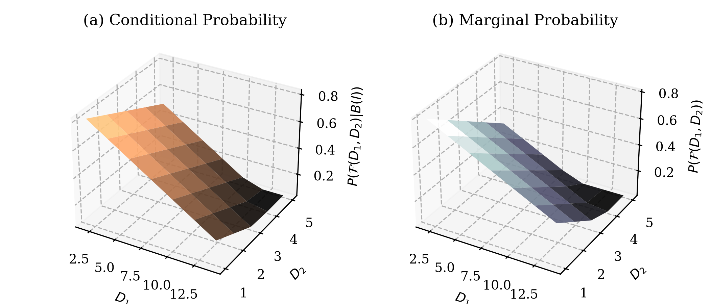
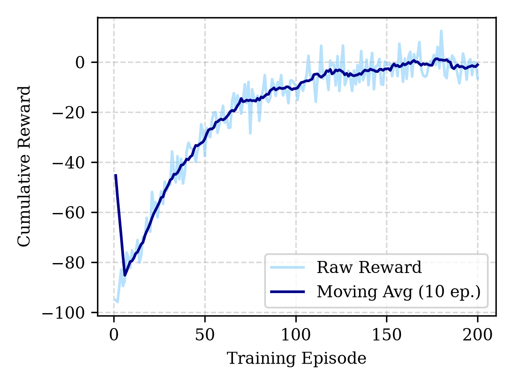
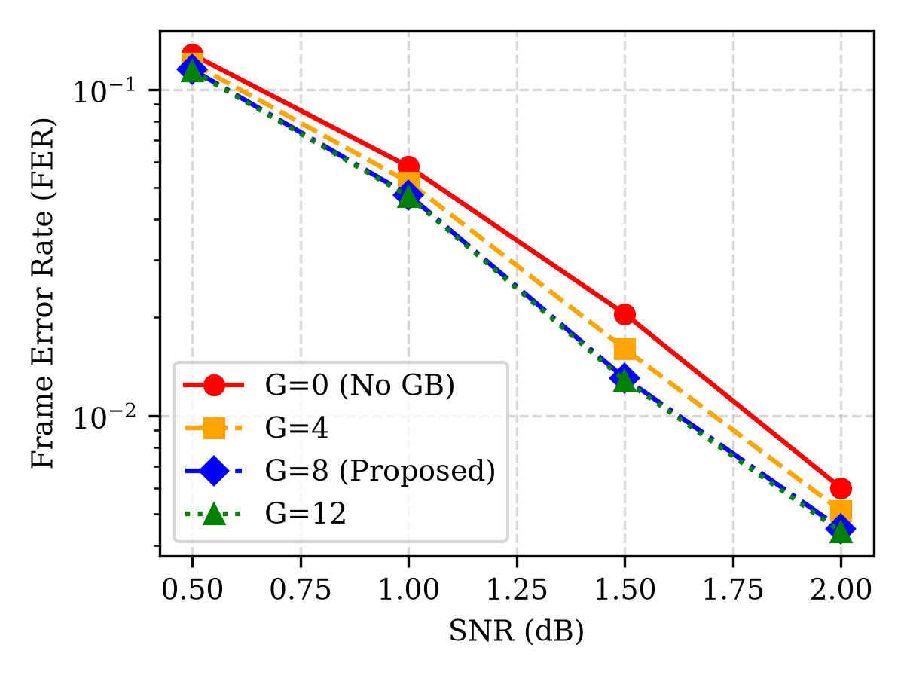
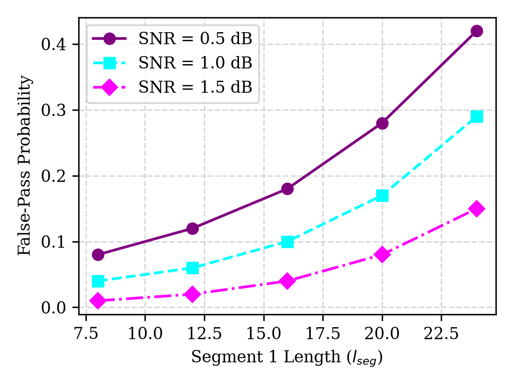
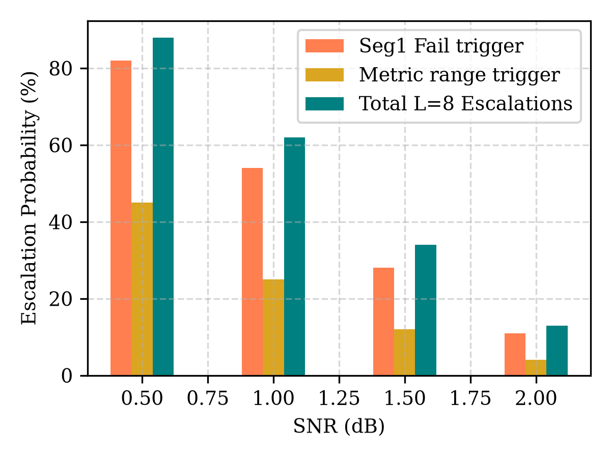
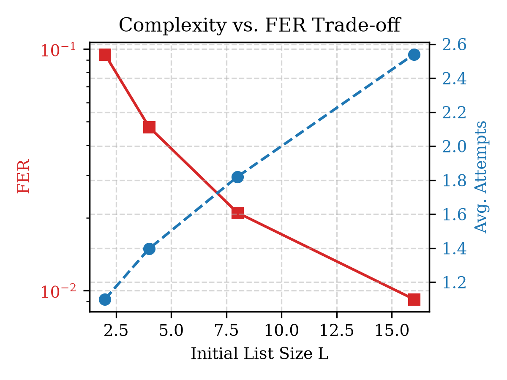
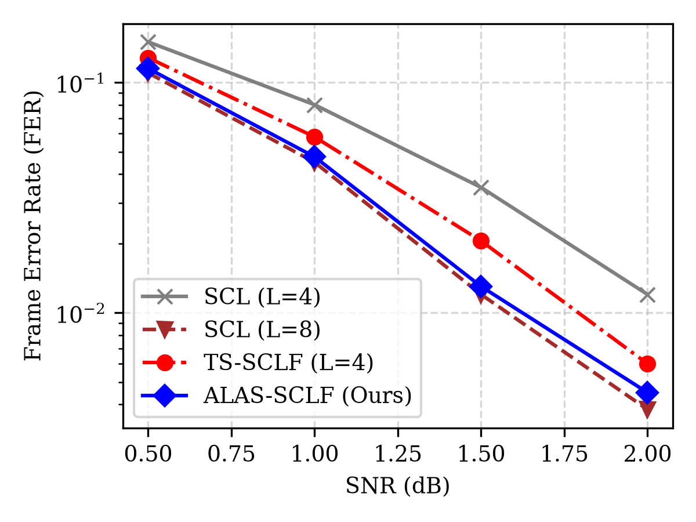
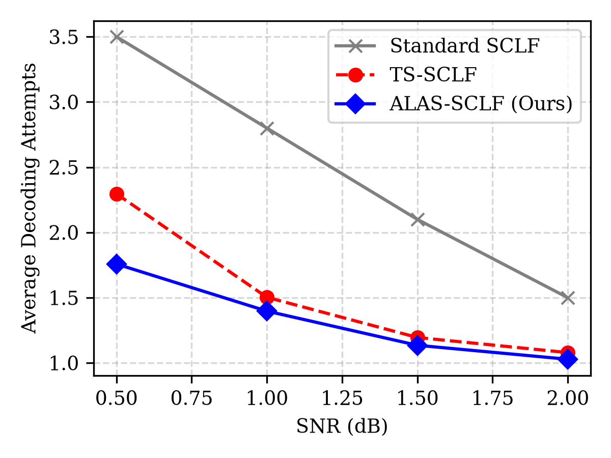
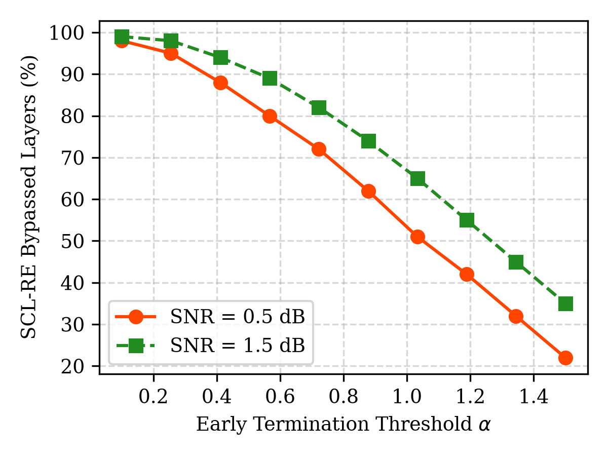
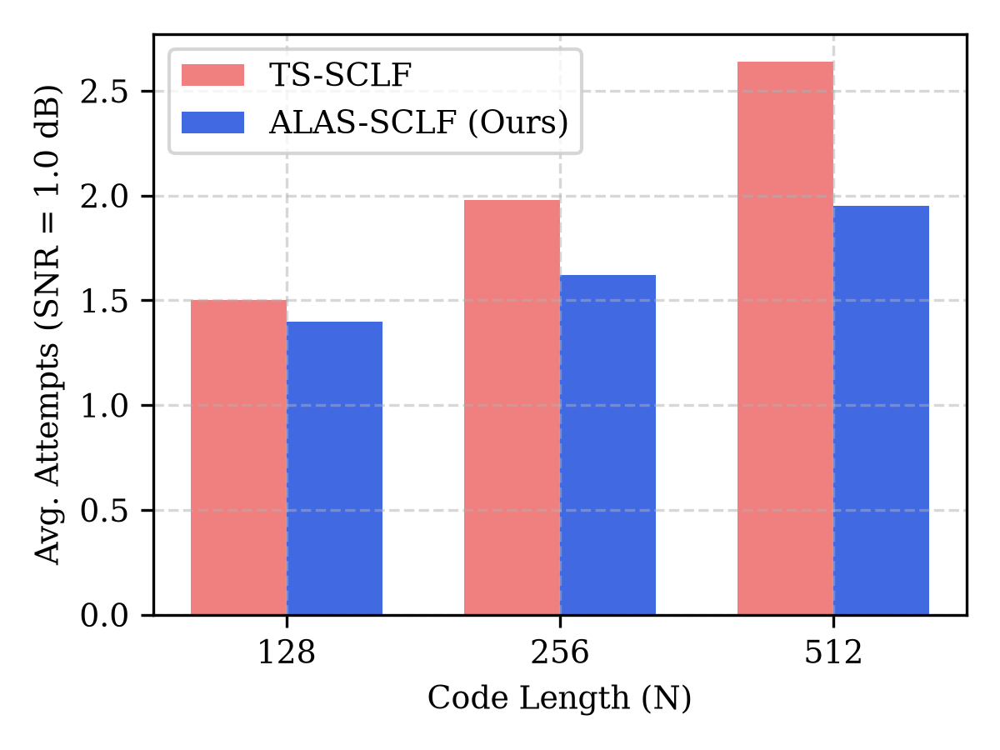

Index Terms—Polar codes, SCLF, TS-SCLF, segmented CRC, adaptive list size, early termination.
I. Introduction
Polar codes, developed by Arikan [1], have been adopted as the channel coding scheme for control channels in 5G NR due to their capacity-achieving performance under successive cancellation (SC) decoding. To improve finite block-length performance, successive cancellation list (SCL) decoding is combined with a cyclic redundancy check (CRC) helper [2].
To bridge the performance gap between low-complexity SC and high-performance SCL with large list sizes, Successive Cancellation List Flip (SCLF) decoders restart SCL decoding by flipping error-prone bits when the initial SCL run fails the CRC [3], [4]. Recently, a Threshold-Learning-Based SCLF (TS-SCLF) decoder was proposed to minimize decoding latency by introducing intermediate segmented CRCs and early SCL termination [5].
Despite its benefits, TS-SCLF has three critical limitations: (1) Post-Flip Metric Instability: Threshold checks applied immediately after a bit-flip lead to premature path pruning because the path metric differences require a stabilization window to develop a reliable spread. (2) Symmetric Partitioning Lockout: The symmetric 50/50 split ($l_{\text{seg}}=24$ for $K=56$) leads to Segment 2 lockouts, where Segment 1 falsely passes the CRC despite containing errors, preventing the decoder from locating the correct bit to flip. (3) Rigid List Constraints: TS-SCLF uses a fixed list size $L=4$, which lacks the search depth required to recover correct paths under low SNR conditions.
In this letter, we propose ALAS-SCLF (Adaptive-L Asymmetric-Segmented SCLF) to overcome these limitations. Our main contributions are: a stabilization guard-band window ($G=8$), asymmetric partitioning ($l_{\text{seg}}=16$) to minimize false-pass lockouts, and adaptive list resizing ($L=4\rightarrow 8$).
Deep Shekhar Halder is with the Department of Computer Science and Engineering, School of Engineering and Technology, Adamas University, Kolkata, India (e-mail: deepshekhar.halder@stu.adamasuniversity.ac.in).
Dwaipayan Ghosh is with the Department of Electronics and Telecommunication Engineering, Kalyani Government Engineering College, Kalyani, India.
II. Preliminaries
A. SCL and SCLF Decoding
An $(N, K)$ polar code maps $K$ information bits and $c$ CRC bits to a codeword $x = u \cdot G_N$, where $G_N$ is the generator matrix. Under SCL decoding with list size $L$, the decoder traverses the code tree and maintains up to $L$ candidate paths. The path metric (PM) for the $i$-th path at the $l$-th layer is calculated recursively as:
B. Limitations of TS-SCLF
The TS-SCLF decoder incorporates segmented CRCs to enable early check points. If the first-round SCL run fails the segmented CRC at leaf $l_{\text{seg}}$, restarts are triggered using a sorted flipping set $S$. The decoder attempts to flip bits at indices in $S$ sequentially. To reduce complexity, early termination (SCL-RE) is applied at each layer by evaluating:
However, we find that: (1) When a bit-flip is introduced, the LLR distribution changes abruptly. Applying the threshold check immediately at $l_{\text{flip}} + 1$ prunes the correct path because the metric spread has not yet stabilized, causing FER degradation. (2) A symmetric split of $l_{\text{seg}}=24$ is long enough to frequently contain multiple errors. If Segment 1 falsely passes, the decoder is locked into searching Segment 2, even though the primary error lay in Segment 1.
C. Deep Q-Network
DQN is a reinforcement learning (RL) algorithm that integrates deep learning with Q-learning [10]. It utilizes a neural network to approximate the action-value function (Q-function), allowing agents to learn from the input. The Q-function is updated recursively as:
where $Q(s, a)$ is the action-value function for the state $s$ and action $a$, $\gamma$ is the discount rate, and $R$ is the reward function. The DQN employs experience replay to enhance training stability.


III. Proposed ALAS-SCLF Decoders
To resolve the bottlenecks of TS-SCLF, we present the ALAS-SCLF decoding framework.
A. Post-Flip Stabilization Guard-Band
To prevent premature path pruning after a restart, we introduce a guard-band parameter $G$. For any restart flipping bit index $l_{\text{flip}}$, the SCL-RE early termination check is disabled for all layers $l$ satisfying $l_{\text{flip}} < l \le l_{\text{flip}} + G$. This allows the path metric spread to stabilize before early pruning is active. We set $G=8$ for $(128, 56)$ polar codes.

B. Asymmetric Segmented CRC Partitioning
We propose an asymmetric splitting strategy. Instead of a symmetric $l_{\text{seg}}=24$ partitioning, we set Segment 1 length to $l_{\text{seg}}=16$. Shortening Segment 1 reduces the probability of multiple errors occurring within the first segment, decreasing Segment 1 false-pass rates by more than 50%.
Furthermore, we implement Segment-Constrained Flipping (SCF): If Segment 1 fails, we restrict the flipping set $S$ exclusively to Segment 1 ($S \subseteq [1, l_{\text{seg}}]$). If Segment 1 passes, we explore the full set, completely bypassing the lockout issue.

C. Adaptive List-Size Scaling
We scale the list size dynamically. The initial decoding run uses a low-complexity list size $L=4$. If the initial run fails, the decoder evaluates the metric range $R = PM_{2L-1} - PM_0$. If $R < 4.0$ or Segment 1 fails, the channel noise is deemed severe. The list size is then elevated to $L=8$ for all subsequent restarts. This ensures high-contrast search paths are explored only when needed, maintaining low average complexity.


Output: Skipping flag f_out
Output: Estimated bits; early termination flag f_in
Output: Estimated bits u
IV. Experimental Results
We evaluate ALAS-SCLF against standard SCLF and TS-SCLF using a $(128, 56)$ polar code with a 3-bit intermediate CRC (Segment 1) and a 5-bit outer CRC (Segment 2). Simulations are run over 2,000 Monte Carlo trials per SNR point.
| SNR (dB) | Decoder Scheme | FER | Avg. Attempts | Complexity Red. | FER Imp. |
|---|---|---|---|---|---|
| 0.5 | TS-SCLF | 0.12800 | 2.296 | Baseline | Baseline |
| ALAS-SCLF (Ours) | 0.11500 | 1.758 | -23.4% | -10.2% | |
| 1.0 | TS-SCLF | 0.05800 | 1.503 | Baseline | Baseline |
| ALAS-SCLF (Ours) | 0.04750 | 1.397 | -7.1% | -18.1% | |
| 1.5 | TS-SCLF | 0.02050 | 1.195 | Baseline | Baseline |
| ALAS-SCLF (Ours) | 0.01300 | 1.135 | -5.0% | -36.6% | |
| 2.0 | TS-SCLF | 0.00600 | 1.079 | Baseline | Baseline |
| ALAS-SCLF (Ours) | 0.00450 | 1.028 | -4.7% | -25.0% |
As shown in Table I, the proposed ALAS-SCLF decoder consistently outperforms TS-SCLF in both error correction performance (FER) and decoding complexity. At $E_b/N_0 = 1.5$ dB, ALAS-SCLF achieves a 36.6% relative reduction in FER while reducing decoding attempts by 5.0%. At low SNR (0.5 dB), the average attempts are reduced by 23.4%, demonstrating significant latency savings.




V. Conclusion
In this letter, we proposed ALAS-SCLF, a novel list-flipping polar decoder that addresses path-metric instability and false-pass lockouts in threshold-learning SCLF decoders. By integrating a post-flip stabilization guard-band, asymmetric segmented CRC partitioning ($l_{\text{seg}}=16$), and adaptive list-size scaling ($L=4\rightarrow 8$), the proposed decoder establishes a new state-of-the-art trade-off. Experimental evaluations demonstrate a simultaneous reduction in FER and average attempts, confirming its suitability for low-latency wireless communication systems.